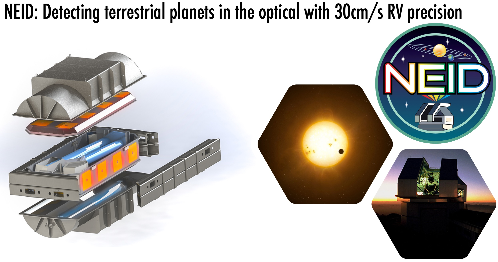

Guðmundur K. Stefánsson, PhD
Hi! I am a NASA Sagan Fellow in Astrophysics at Princeton University. I work on developing and using next-generation instruments to discover and characterize exoplanets around nearby low-mass stars.
Research: Instrumentation
Precision Photometry with Engineered Diffusers
Precision ground-based photometric facilities play a critical role in confirming and characterizing transiting exoplanet candidates from space-based surveys such as the Transiting Exoplanet Survey Satellite (TESS). In Stefansson et al. 2017, I led the design and implementation of an Engineered Diffuser for the ARCTIC instrument on the 3.5m Telescope at Apache Point Observatory. Produced using specialized nanofabrication techniques, Engineered Diffusers are micro-structured optical devices capable of molding the image of a star into a broad and stable top-hat shape, minimizing photometric errors due to detector, seeing, and scintillation effects. Using the Engineered Diffuser on the 3.5m Telescope, we have demonstrated some of the highest photometric precisions achieved from the ground, or 62ppm precision in 30 minute bins.
As Engineered Diffusers are inexpensive, diffusers have now been installed and used at a number of different observatories to characterize a number of transiting planets (see Observation section below). If you are interested in trying a diffuser on your telescope, check out my Python package iDiffuse, and/or don't hesitate to send me an email.
Relevant Papers:
- Stefansson et al. 2017: Toward Space-like Photometric Precision from the Ground with Beam-shaping Diffusers
- Stefansson et al. 2018b: Extreme precision photometry from the ground with beam-shaping diffusers for K2, TESS, and beyond

Precision Radial Velocities in the Near Infrared and Optical
I am a part of the instrument and science teams of two next-generation precision radial velocity (RV) spectrographs designed to detect and characterize planets in the habitable-zones around nearby stars: the near-infrared (NIR) Habitable-zone Planet Finder (HPF) on the 10m Hobby-Eberly Telescope, and the NASA/NSF funded NEID Spectrograph for the 3.5m WIYN Telescope at Kitt Peak Observatory.
The main science goal of HPF is to carry out a 5-year survey to detect and characterize terrestrial planets in the Habitable-zone around nearby mid-to-late M-dwarf stars within ~15pc. I currently maintain the HPF RV extractions, where we have demonstrated that HPF is capable of 1.53m/s RV precision on the nearby bright M-dwarf Barnard's Star (Metcalf et al. 2019), the highest precision RVs in the NIR. The main science goal of NEID is to detect and characterize terrestrial planets in the habitable-zone around nearby FGK stars with a goal RV precision of 30cm/s.
For newer updates, check out the HPF blog and the NEID blog.
Relevant Papers:
- Stefansson et al. 2016: A Versatile Technique to Enable Sub-milli-Kelvin Instrument Stability for Precise Radial Velocity Measurements: Tests with the Habitable-zone Planet Finder
- Robertson, Anderson, Stefansson et al. 2019: Ultrastable environment control for the NEID spectrometer: design and performance demonstration
- Metcalf et al. 2019: Stellar spectroscopy in the near-infrared with a laser frequency comb
Research: Observation
Discovering New Planets Orbiting Nearby M-dwarf Stars
Using diffuser-assisted photometry and precision radial velocities with HPF, I have led or directly contributed to a number of efforts to detect and characterize new planet candidates orbiting nearby stars, with a particular focus on planets orbiting nearby M-dwarfs.
Relevant Papers:
- Stefansson et al. 2020a: Detection of the nearby M-dwarf planet G 9-40b, an excellent target for transmission spectroscopy.
- Stefansson et al. 2020c: Detection of the TOI-1266 system, a two planet M-dwarf system where one planet is in the radius valley.
- Cañas et al. 2020: Detection of TOI-1899b, the first Warm Jupiter orbiting an M-dwarf.
- Kanodia et al. 2020: Detection of TOI-1728b, a hot Supter Neptune orbiting a nearby M-dwarf.
- Cañas et al. 2019: Detection of TOI-150b, a Hot Jupiter in the TESS Continuous Viewing Zone.

Characterization of the Properties of Nearby M-dwarf Planet Systems
Using diffuser-assisted photometry and precision Radial Velocities (RVs) with HPF and other spectrographs, I am currently leading efforts to study the orbital and atmospheric properties of planets orbiting nearby M-dwarfs.
In particular, I am interested in using the Rossiter-McLaughlin Effect to characterize the spin-orbit alignment of planets, a powerful probe of their formation and subsequent dynamical evolution. As is shown in the animation to the left, this method relies on measuring the angle between the stellar rotation axis and the stellar equator. As a star rotates, one hemisphere is blueshifted towards the observer, and the other hemisphere is redshifted. As a planet crosses in front of the stellar disk, the planet successively blocks differently blue and redshifted light from the star resulting in a detectable signature in the RVs during the transit. The shape and size of this signature is strongly sensitive to the obliquity of the planet, the angle between the stellar equator and the planet orbit.Relevant Papers:
- Stefansson et al. 2022: The Warm Neptune GJ 3470b Has a Polar Orbit.
- Stefansson et al. 2020b: Characterization of the young hot Neptune planet K2-25b orbiting an M4.5-dwarf in the Hyades.
- Stefansson et al. 2018a: Diffuser-assisted characterization of the Neptune-sized planets K2-28b and K2-100b.
Press Releases
Sub-Neptune-sized Planet Validated with the Habitable-zone Planet Finder
First HPF Planet Validation: a Nearby M-dwarf Star Ideal for Transmission Spectroscopy (Stefansson+2020a, AJ).Surprisingly Dense Exoplanet Challenges Planet Formation Theories
The Young Neptune K2-25b is Dense, Eccentric, and Well-Aligned (Stefansson+2020b, AJ)NEID Exoplanet Instrument Sees First Light
NEID, the Precision Doppler Spectrograph for the 3.5m WIYN Telescope, Sees First Light.In the mysterious Blue Ring Nebula, scientists see the fate of binary stars
Solving the 16-Year-Old Cosmic Mystery of the Blue Ring Nebula (Hoadley+2020, Nature)Robert J Trumpler Award 2020
For a PhD Thesis Considered Unusually Important for Astronomy.Publications
81 Total, 1 in NatureFirst Author
10 Stefansson, et al. 2022, “The Warm Neptune GJ 3470b has a Polar Orbit“. ApJL, 931, 15 arxiv: 2111.01295
9 Stefansson, et al. 2020, “A Mini-Neptune and a Radius-Valley-Planet Orbiting the Nearby M2 dwarf TOI-1266 in its Venus-Zone: Validation with the Habitable-zone Planet Finder“. In AJ: 160, 6 (Nov, 2020). arxiv: 2006.11180.
8 Stefansson, et al. 2020, “The Habitable-zone Planet Finder Reveals A High Mass and a Low Obliquity for the Young Neptune K2-25b“, In: AJ 160, 192 (Oct, 2020). arxiv: 2007.12766.
7 Stefansson, et al. 2020, “A sub-Neptune sized planet transiting the M2.5-dwarf G 9-40: Validation with the Habitable-zone Planet Finder“, In: AJ, 159, 100 (March 2020). arxiv: 1912.00291.
6 Stefansson, et al. 2018, “Diffuser-assisted Photometric Follow-up Observations of the Neptune-sized Planets K2-28b and K2-100b”. In: AJ 156, 266 (July 2018). arXiv: 1807.04420.
5 Stefansson, et al. 2018, “Extreme precision photometry from the ground with beam-shaping diffusers for K2, TESS, and beyond”. In: SPIE Conference Series. Vol. 10702. SPIE. Aug. 2018, p. 10702.
4 Stefansson, et al. 2017, “Toward Space-like Photometric Precision from the Ground with Beam-shaping Diffusers”. In: ApJ 848, 9 (Oct. 2017), p. 9. arXiv: 1710.01790.
3 Stefansson, et al. 2016, “A Versatile Technique to Enable Sub-milli-Kelvin Instrument Stability for Precise Radial Velocity Measurements: Tests with the Habitable-zone Planet Finder”. In: ApJ 833, 175 (Dec. 2016), p. 175. arXiv: 1610.06216.
2 Stefansson, et al. 2016, “Ultra-stable temperature and pressure control for the Habitable-zone Planet Finder spectrograph”. In: SPIE Conference Series. Vol. 9908. SPIE. Aug. 2016, p. 990871.
1 Stefansson, et al. 2011, "Samþætting vökvarása og ljósrása á örflögum (English: "Fabrication of integrated optical and microfluidic devices)" In: Raust (2011).
2nd & 3rd Author
19 Frazier, Stefánsson et al. 2023, "NEID Reveals that The Young Warm Neptune TOI-2076b Har a Low Obliquity". ApJL, 944, 41. arxiv: 2212.06266.
18 Harman, Kopparapu, Stefánsson et al. 2021, "A Snowball in Hell: The Potential Steam Atmosphere of TOI-1266c". PSJ, 3, 45. arxiv: 2109.10838.
17 S. Vissapragada, G. Stefánsson, M. Greklek-McKeon et al. 2021, "A Search for Planetary Metastable Helium Absorption in the V1298 Tau System". In: AJ (accepted), (July, 2021). arxiv: 2108.05358.
16 S. Kanodia, G. Stefánsson, C. Cañas et al. 2021, "TOI-532b: The Habitable-zone Planet Finder confirms a Large Super Neptune in the Neptune Desert orbiting a metal-rich M dwarf host". In: AJ (accepted), (July, 2021). arxiv: 2107.13670.
15 V. Krishnamurthy, T. Hirano, G. Stefánsson et al. 2021, "Non-detection of Helium in the upper atmospheres of TRAPPIST-1b, e and f". In: AJ (accepted), (May, 2021). arxiv: 2106.11444.
14 J. Lubin, P. Robertson, G. Stefansson et al. 2021, "Stellar Activity Manifesting at a One Year Alias Explains Barnard b as a False Positive". In: AJ (accepted), (May, 2021). arxiv: 2105.07005.
13 S. Mahadevan, G. Stefánsson, P. Robertson et al. 2021, "The Habitable-zone Planet Finder Detects a Terrestrial-mass Planet Candidate Closely Orbiting Gliese 1151: The Likely Source of Coherent Low-frequency Radio Emission from an Inactive Star". In: ApJL (accepted), (Feb, 2021). arxiv: 2102.02233.
12 C. Cañas, G. Stefansson, S. Kanodia, et al. 2020, "A warm Jupiter transiting an M dwarf: A TESS single transit event confirmed with the Habitable-zone Planet Finder". In: AJ, 160, 147 arXiv: 2007.07098.
11 S. Kanodia, C. Cañas, G. Stefansson et al. 2020, "TOI-1728b: The Habitable-zone Planet Finder confirms a warm super Neptune orbiting an M dwarf host". In: ApJ, 899, 29 (Aug, 2020). arXiv: 2006.14546.
10 P. Robertson, G. Stefansson, Suvrath Mahadevan, et al. 2020, "Persistent starspot signals on M dwarfs: multi-wavelength Doppler observations with the Habitable-zone Planet Finder and Keck/HIRES". In: ApJ, 897, 125 (July 2020). arXiv: 2005.09657.
9 J. Ninan, G. Stefansson, S. Mahadevan, et al. 2020, "Evidence for He I 10830 A absorption during the transit of a warm Neptune around the M-dwarf GJ 3470 with the Habitable-zone Planet Finder". In: ApJ, 894, 97 (May 2020). arXiv: 1910.02070.
8 J. Ninan, S. Mahadevan, G. Stefansson et al. 2019, "Impact of crosshatch patterns in H2RGs on high precision radial velocity measurements: Exploration of measurement and mitigation paths with HPF". In: Accepted for Publication in ISPA 2018 (2019). arXiv: 1903.06614.
7 S. Kanodia, A. Wolfgang, G. Stefansson, et al. 2019, "Mass-Radius relationship for M dwarf exoplanets: Comparing nonparametric and parametric methods". In: ApJ 882, 38 (Sep. 2019), p. 14. arXiv: 1903.00042.
6 C. von Essen, G. Stefansson, M. Mallonn, et al. 2019, "First Light of Engineered Diffusers at the Nordic Optical Telescope Reveal Time Variability in the Optical Eclipse Depth of WASP-12b". In: A&A, 628, 11 (August 2019). arXiv: 1904.05362
5 C. Cañas, G. Stefansson, A. J. Monson, et al. 2019, "TOI-150: A transiting hot Jupiter in the TESS southern CVZ". In: ApJL 877, 29 (June 2019), p. 8. arXiv: 1902.09710.
4 P. Robertson, T. Anderson, G. Stefansson, et al. 2019, “Ultrastable environment control for the NEID spectrometer: design and performance demonstration”. In: JATIS, 015003 (Jan 2019). arXiv: 1902.07729.
3 Y. Li, Stefansson, G., P. Robertson, et al. 2017, “A Candidate Transit Event around Proxima Centauri”. In: Research Notes of the American Astronomical Society 1, 49 (Dec. 2017), p. 49. arXiv: 1712.04483.
2 C. Bender, P. Robertson, Stefansson, G. et al. 2016, “The instrument control software package for the Habitable-Zone Planet Finder spectrometer”. In: SPIE Conference Series. Vol. 9913. SPIE. Aug. 2016, p. 991338.
1 Slovinsky, I., Stefansson, G., Kossoy A., et al. 2013, “Propagation Loss of Long-Range Surface Plasmon Polariton Gold Stripe Waveguides in the Thin-Film Limit”. In: Plasmonics 8.4 (2013), pp. 1613–1619.
Coauthor
52Luke C. Powers, Jessica Libby-Roberts, Andrea S.J. Lin, Caleb I. Cañas, Shubham Kanodia, Suvrath Mahadevan, Joe P. Ninan, Guðmundur Stefánsson, Arvind F. Gupta, Sinclaire Jones, Henry A. Kobulnicky, Andrew Monson, Brock A. Parker, Tera N. Swaby, Chad F. Bender, William D. Cochran, Leslie Hebb, Andrew J. Metcalf, Paul Robertson, Christian Schwab, John Wisniewski, Jason T. Wright. "TOI-3785 b: A Low-Density Neptune Orbiting an M2-Dwarf Star". AJ (submitted), arxiv: 2304.04730.
51 James Sikora, Jason Rowe, Saugata Barat, Jacob L. Bean, Madison Brady, Jean-Michel Désert, Adina D. Feinstein, Emily A. Gilbert, Gregory Henry, David Kasper, Déreck-Alexandre Lizotte, Michael R. B. Matesic, Vatsal Panwar, Andreas Seifahrt, Hinna Shivkumar, Gudmundur Stefánsson, Julian Stürmer. "Updated Planetary Mass Constraints of the Young V1298 Tau System Using MAROON-X". AJ, 165, 250, arxiv: 2304.00797.
50Mika Lambert, Chad F. Bender, Shubham Kanodia, Caleb I. Cañas, Andrew Monson, Guðmundur Stefánsson, William D. Cochran, Mark E. Everett, Arvind F. Gupta, Fred Hearty, Henry A. Kobulnicky, Jessica E. Libby-Roberts, Andrea S.J. Lin, Suvrath Mahadevan, Joe P. Ninan, Brock A. Parker, Paul Robertson, Christian Schwab, Ryan C. Terrien. "TOI-5375 B: A Very Low Mass Star at the Hydrogen-Burning Limit Orbiting an Early M-type Star". AJ, 165, 218. arxiv: 2303.16193.
49Arvind F. Gupta, Jonathan M. Jackson, Guillaume Hebrard, Andrea S. Lin, Keivan G. Stassun, Jiayin Dong, Steven Villanueva, Diana Dragomir, Suvrath Mahadevan, Jason T. Wright, Jose Manuel Almenara, Cullen H. Blake, Isabelle Boisse, Pia Cortes-Zuleta, Paul A. Dalba, Rodrigo F. Diaz, Eric B. Ford, Thierry Forveille, Robert Gagliano, Samuel P. Halverson, Neda Heidari, Shubham Kanodia, Flavien Kiefer, David W. Latham, Michael W. McElwain, Ismael Mireles, Joshua Pepper, George R. Ricker, Paul Robertson, Arpita Roy, Martin Schlecker, Christian Schwab, Sara Seager, Avi Shporer, Gudmundur Stefansson, Ryan C. Terrien, Eric B. Ting, Joshua N. Winn, Allison Youngblood. "A High-Eccentricity Warm Jupiter Orbiting TOI-4127". AJ, 165, 234. arxiv: 2303.14570.
48Caleb I. Cañas, Chad F. Bender, Suvrath Mahadevan, Dmitry Bizyaev, Nathan De Lee, Scott W. Fleming, Fred Hearty, Steven R. Majewski, Christian Nitschelm, Donald P. Schneider, Javier Serna, Keivan G. Stassun, Guðmundur Stefánsson, Guy S. Stringfellow, John C. Wilson. "Characterization of low-mass companions to Kepler objects of interest observed with APOGEE-N". ApJS, 265, 50. arxiv: 2302.07713.
47Caleb I. Cañas, Shubham Kanodia, Jessica Libby-Roberts, Andrea S.J. Lin, Maria Schutte, Luke Powers, Sinclaire Jones, Andrew Monson, Songhu Wang, Guðmundur Stefánsson, William D. Cochran, Paul Robertson, Suvrath Mahadevan, Adam F. Kowalski, John Wisniewski, Brock A. Parker, Alexander Larsen, Franklin A.L. Chapman, Henry A. Kobulnicky, Arvind F. Gupta, Mark E. Everett, Bryan Edward Penprase, Gregory Zeimann, Corey Beard, Chad F. Bender, Knicole D. Colón, Scott A. Diddams, Connor Fredrick, Samuel Halverson, Joe P. Ninan, Lawrence W. Ramsey, Arpita Roy, Christian Schwab. "TOI-3984 A b and TOI-5293 A b: two temperate gas giants transiting mid-M dwarfs in wide binary systems". AJ (submitted) arxiv: 2302.07714.
46Jessica E. Libby-Roberts, Maria Schutte, Leslie Hebb, Shubham Kanodia, Caleb Canas, Gudmundur Stefansson, Andrea S.J. Lin, Suvrath Mahadevan, Winter Parts (They/Them), Luke Powers, John Wisniewski, Chad F. Bender, William D. Cochran, Scott A. Diddams, Mark E. Everett, Arvind F. Gupta, Samuel Halverson, Henry A. Kobulnicky, Adam F. Kowalski, Alexander Larsen, Andrew Monson, Joe P. Ninan, Brock A. Parker, Lawrence W. Ramsey, Paul Robertson, Christian Schwab, Tera N. Swaby, Ryan C. Terrien. "An In-Depth Look at TOI-3884b: a Super-Neptune Transiting a M4 Dwarf with Persistent Star Spot Crossings". AJ, 165, 249. arxiv: 2302.04757.
45Andrea S.J. Lin, Jessica E. Libby-Roberts, Jaime A. Alvarado-Montes, Caleb I. Cañas, Shubham Kanodia, Leslie Hebb, Eric L. N. Jensen, Suvrath Mahadevan, Luke C. Powers, Tera N. Swaby, John Wisniewski, Corey Beard, Chad F. Bender, Cullen H. Blake, William D. Cochran, Scott A. Diddams, Robert C. Frazier, Connor Fredrick, Michael Gully-Santiago, Samuel Halverson, Sarah E. Logsdon, Michael W. McElwain, Caroline Morley, Joe P. Ninan, Jayadev Rajagopal, Lawrence W. Ramsey, Paul Robertson, Arpita Roy, Christian Schwab, Guðmundur Stefánsson, Daniel J. Stevens, Ryan C. Terrien, Jason T. Wright."The unusual M-dwarf Warm Jupiter TOI-1899~b: Refinement of orbital and planetary parameters". AJ (submitted) arxiv: 2301.10837.
44Madison Brady, Jacob Bean, Andreas Seifahrt, David Kasper, Rafael Luque, Ansgar Reiners, Björn Benneke, Guðmundur Stefánsson, Julian Stürmer. "Measuring the Obliquities of the TRAPPIST-1 Planets with MAROON-X". AJ, 165, 129. arxiv: 2211.11841.
43Casey Brinkman, Lauren M. Weiss, Fei Dai, Daniel Huber, Edwin S. Kite, Diana Valencia, Jacob L. Bean, Corey Beard, Aida Behmard, Sarah Blunt, Madison Brady, Benjamin Fulton, Steven Giacalone, Andrew W. Howard, Howard Isaacson, David Kasper, Jack Lubin, Mason MacDougall, Joseph M. Akana Murphy, Mykhalo Plotnykov, Alex S. Polanski, Malena Rice, Andreas Seifahrt, Gudmundur Stefansson, Julian Sturmer. "TOI-561 b: A Low Density Ultra-Short Period "Rocky" Planet around a Metal-Poor Star". AJ, 165, 88. arxiv: 2210.06665.
42Shubham Kanodia, Suvrath Mahadevan, Jessica Libby-Roberts, Gudmundur Stefansson, Caleb I. Canas, Anjali A. A. Piette, Alan Boss, Johanna Teske, John Chambers, Greg Zeimann, Andrew Monson, Paul Robertson, Joe P. Ninan, Andrea S.J. Lin, Chad F. Bender, William D. Cochran, Scott A. Diddams, Arvind F. Gupta, Samuel Halverson, Suzanne Hawley, Henry A. Kobulnicky, Andrew J. Metcalf, Brock A. Parker, Luke Powers, Lawrence W. Ramsey, Arpita Roy, Christian Schwab, Tera N. Swaby, Ryan C. Terrien, John Wisniewski. "TOI-5205b: A Jupiter transiting an M dwarf near the Convective Boundary". AJ, 165, 120. arxiv: 2209.11160.
41Arvind F. Gupta, Jacob K. Luhn, Jason T. Wright, Suvrath Mahadevan, Eric B. Ford, Gudmundur Stefansson, Chad F. Bender, Cullen H. Blake, Samuel Halverson, Fred R. Hearty, Shubham Kanodia, Sarah E. Logsdon, Michael W. McElwain, Joe P. Ninan, Paul Robertson, Arpita Roy, Christian Schwab, Ryan C. Terrien. "Detection of p-mode Oscillations in HD 35833 with NEID and TESS". AJ, 164, 254. arxiv: 2210.00544.
40P. Chaturvedi, P. Bluhm, E. Nagel, A. P. Hatzes, G. Morello, M. Brady, J. Korth, K. Molaverdikhani, D. Kossakowski, J. A. Caballero, E. W. Guenther, E. Pallé, N. Espinoza, A. Seifahrt, N. Lodieu, C. Cifuentes, E. Furlan, P. J. Amado, T. Barclay, J. Bean, V. J. S. Béjar, G. Bergond, A. W. Boyle, D. Ciardi, K. A. Collins, K. I. Collins, E. Esparza-Borges, A. Fukui, C. L. Gnilka, R. Goeke, P. Guerra, Th. Henning, E. Herrero, S. B. Howell, S. V. Jeffers, J. M. Jenkins, E. L. N. Jensen, D. Kasper, T. Kodama, D. W. Latham, M. J. López-González, R. Luque, D. Montes, J. C. Morales, M. Mori, F. Murgas, N. Narita, G. Nowak, H. Parviainen, V. M. Passegger, A. Quirrenbach, S. Reffert, A. Reiners, I. Ribas, G. R. Ricker, E. Rodríguez, C. Rodríguez-López, M. Schlecker, R. P. Schwarz, A. Schweitzer, S. Seager, G. Stefánsson, C. Stockdale, L. Tal-Or, J. D. Twicken, S. Vanaverbeke, G. Wang, D. Watanabe, J. N. Winn, M. Zechmeister. "TOI-1468: A system of two transiting planets, a super-Earth and a mini-Neptune, on opposite sides of the radius valley". A&A, 666, 155. arxiv: 2208.10351.
39Malena Rice, Songhu Wang, Xian-Yu Wang, Gudmundur Stefansson, Howard Isaacson, Andrew W. Howard, Sarah E. Logsdon, Heidi Schweiker, Fei Dai, Casey Brinkman, Steven Giacalone, Rae Holcomb. "A Tendency Toward Alignment in Single-star Warm-Jupiter Systems". AJ, 164, 104 arxiv: 2207.06511.
38Corey Beard, Paul Robertson, Shubham Kanodia, Jack Lubin, Caleb I. Cañas, Arvind F. Gupta, Rae Holcomb, Sinclaire Jones, Jessica E. Libby-Roberts, Andrea S.J. Lin, Suvrath Mahadevan, Guðmundur Stefánsson, Chad F. Bender, Cullen H. Blake, William D. Cochran, Michael Endl, Mark Everett, Eric B. Ford, Connor Fredrick, Samuel Halverson, Leslie Hebb, Dan Li, Sarah E. Logsdon, Jacob Luhn, Michael W. McElwain, Andrew J. Metcalf, Joe P. Ninan, Jayadev Rajagopal, Arpita Roy, Maria Schutte, Christian Schwab, Ryan C. Terrien, John Wisniewski, Jason T. Wright. "GJ 3929: High-precision Photometric and Doppler Characterization of an Exo-Venus and Its Hot, Mini-Neptune-mass Companion". ApJ, 936, 55 arxiv: 2207.10672.
37 Jiayin Dong, Chelsea X. Huang, George Zhou, Rebekah I. Dawson, Gudmundur K. Stefánsson, Chad F. Bender, Cullen H. Blake, Eric B. Ford, Samuel Halverson, Shubham Kanodia, Suvrath Mahadevan, Michael W. McElwain, Joe P. Ninan, Paul Robertson, Arpita Roy, Christian Schwab, Daniel J. Stevens, Ryan C. Terrien, Andrew Vanderburg, Adam L. Kraus, Stephanie Douglas, Elisabeth Newton, Rayna Rampalli, Daniel M. Krolikowski, Karen A. Collins, Joseph E. Rodriguez, Dax L. Feliz, Gregor Srdoc, Carl Ziegler, Khalid Barkaoui, Francisco J. Pozuelos, Emmanuel Jehin, Michaël Gillon, Zouhair Benkhaldoun, Pablo Lewin, Raquel Forés-Toribio, Jose A. Muñoz, Kim K. McLeod, Fiona Powers Özyurt, Ferran Grau Horta, Felipe Murgas, David W. Latham, Samuel N. Quinn, Allyson Bieryla, Steve B. Howell, Crystal L. Gnilka, David R. Ciardi, Michael B. Lund, Courtney D. Dressing, Steven Giacalone, Arjun B. Savel, Ivan A. Strakhov, Alexander A. Belinski, George R. Ricker, S. Seager, Joshua N. Winn, Jon M. Jenkins, Guillermo Torres, Martin Paegert. "NEID Rossiter-McLaughlin Measurement of TOI-1268b: A Young Warm Saturn Aligned with Its Cool Host Star". ApJ, 926, 7 arxiv: 2201.12836.
36Andreas Seifahrt, Jacob L. Bean, David Kasper, Julian Stürmer, Madison Brady, Robert Liu, Mathias Zechmeister, Gudmundur K. Stefánsson, Ben Montet, John White, Eduardo Tapia, Teo Mocnik, Siyi Xu, Christian Schwab. "MAROON-X: the first two years of EPRVs from Gemini North". SPIE, 12184, 15.
35Arvind F. Gupta, Chad F. Bender, Joe P. Ninan, Sarah E. Logsdon, Shubham Kanodia, Eli Golub, Jesus Higuera, Jessica Klusmeyer, Samuel Halverson, Suvrath Mahadevan, Michael W. McElwain, Christian Schwab, Gudmundur Stefansson, Paul Robertson, Arpita Roy, Ryan C. Terrien, Jason T. Wright"Real-time exposure control and instrument operation with the NEID spectrograph GUI". SPIE, 12189, 20. arxiv: 2210.00550.
34 Arpan Ghosh, Saurabh Sharma, Joe. P. Ninan, Devendra K. Ojha, Bhuwan C. Bhatt, Shubham Kanodia, Suvrath Mahadevan, Gudmundur Stefansson, R. K. Yadav, A. S. Gour, Rakesh Pandey, Tirthendu Sinha, Neelam Panwar, John P. Wisniewski, Caleb I. Canas, Andrea S. J. Lin, Arpita Roy, Fred Hearty, Lawrence Ramsey, Paul Robertson, Christian Schwab. "Gaia 20eae: A Newly Discovered Episodically Accreting Young Star". ApJ, 926, 68. arxiv: 2112.01717.
33 Shubham Kanodia, Jessica Libby-Roberts, Caleb I. Canas, Joe P. Ninan, Suvrath Mahadevan, Gudmundur Stefansson, Andrea S.J. Lin, Sinclaire Jones, Andrew Monson, Brock A. Parker, Henry A. Kobulnicky, Tera N. Swaby, Luke Powers, Corey Beard, Chad F. Bender, Cullen H. Blake, William D. Cochran, Jiayin Dong, Scott A. Diddams, Connor Fredrick, Arvind F. Gupta, Samuel Halverson, Fred Hearty, Sarah E. Logsdon, Andrew J. Metcalf, Michael W. McElwain, Caroline Morley, Jayadev Rajagopal, Lawrence W. Ramsey, Paul Robertson, Arpita Roy, Christian Schwab, Ryan C. Terrien, John Wisniewski, Jason T. Wright. "TOI-3757 b: A low density gas giant orbiting a solar-metallicity M dwarf". AJ, 164, 81. arxiv: 2203.07178.
32 Michael A. Reefe, Rafael Luque, Eric Gaidos, Corey Beard, Peter P. Plavchan, Marion Cointepas, Bryson L. Cale, Enric Palle, Hannu Parviainen, Dax L. Feliz, Jason Eastman, Keivan Stassun, Jonathan Gagné, Jon M. Jenkins, Patricia T. Boyd, Richard C. Kidwell, Scott McDermott, Karen A. Collins, William Fong, Natalia Guerrero, Jose-Manuel Almenara-Villa, Jacob Bean, Charles A. Beichman, John Berberian, Allyson Bieryla, Xavier Bonfils, François Bouchy, Madison Brady, Edward M. Bryant, Luca Cacciapuoti, Caleb I. Cañas, David R. Ciardi, Kevin I. Collins, Ian Crossfield, Courtney D. Dressing, Philipp Eigmueller, Mohammed El Mufti, Emma Esparza-Borges, Akihiko Fukui, Peter Gao, Claire Geneser, Crystal L. Gnilka, Erica Gonzales, Arvind F. Gupta, Sam Halverson, Fred Hearty, Steve B. Howell, Jonathan Irwin, Shubham Kanodia, David Kasper, Takanori Kodama, Veselin Kostov, David W. Latham, Monika Lendl, Andrea Lin, John H. Livingston, Jack Lubin, Suvrath Mahadevan, Rachel Matson, Elisabeth Matthews, Felipe Murgas, Norio Narita, Patrick Newman, Joe Ninan, Ares Osborn, Samuel N. Quinn, Paul Robertson, Arpita Roy, Joshua Schlieder, Christian Schwab, Andreas Seifahrt, Gareth D. Smith, Ahmad Sohani, Guðmundur Stefánsson, Daniel Stevens, Julian Stürmer, Angelle Tanner, Ryan Terrien, Johanna Teske, David Vermilion, Sharon X. Wang, Justin Wittrock, Jason T. Wright, Mathias Zechmeister, Farzaneh Zohrabi. "A close-in puffy Neptune with hidden friends: The enigma of TOI 620". AJ, 163, 269. arxiv: 2204.03108.
31 Corey Beard, Paul Robertson, Shubham Kanodia, Jessica Libby-Roberts, Caleb I. Canas, Arvind F. Gupta, Rae Holcomb, Sinclaire Jones, Henry A. Kobulnicky, Andrea S.J. Lin, Jack Lubin, Marissa Maney, Brock A. Parker, Gudmundur Stefansson, William D. Cochran, Michael Endl, Leslie Hebb, Suvrath Mahadevan, John Wisniewski, Chad F. Bender, Scott A. Diddams, Mark Everett, Connor Fredrick, Samuel Halverson, Fred Hearty, Andrew J. Metcalf, Andrew Monson, Joe P. Ninan, Arpita Roy, Maria Schutte, Christian Schwab, Ryan C Terrien "TOI-1696 and TOI-2136: Constraining the Masses of Two Mini-Neptunes with the Habitable-Zone Planet Finder". AJ, 163, 286. arxiv: 2204.09063.
30 J. A. Caballero, E. Gonzalez-Alvarez, M. Brady, T. Trifonov, T. G. Ellis, C. Dorn, C. Cifuentes, K. Molaverdikhani, J. L. Bean, T. Boyajian, E. Rodriguez, J. Sanz-Forcada, M. R. Zapatero Osorio, C. Abia, P. J. Amado, N. Anugu, V. J. S. Bejar, C. L. Davies, S. Dreizler, F. Dubois, J. Ennis, N. Espinoza, C. D. Farrington, A. Garcia Lopez, T. Gardner, A. P. Hatzes, Th. Henning, E. Herrero, E. Herrero-Cisneros, A. Kaminski, D. Kasper, R. Klement, S. Kraus, A. Labdon, C. Lanthermann, J.-B. Le Bouquin, M. J. Lopez Gonzalez, R. Luque, A. W. Mann, E. Marfil, J. D. Monnier, D. Montes, J. C. Morales, E. Palle, S. Pedraz, A. Quirrenbach, S. Reffert, A. Reiners, I. Ribas, C. Rodriguez-Lopez, G. Schaefer, A. Schweitzer, A. Seifahrt, B. R. Setterholm, Y. Shan, D. Shulyak, E. Solano, K. R. Sreenivas, G. Stefansson, J. Stuermer, H. M. Tabernero, L. Tal-Or, T. ten Brummelaar, S. Vanaverbeke, K. von Braun, A. Youngblood, M. Zechmeister. "A detailed analysis of the Gl 486 planetary system". A&A, 665, 120. arxiv: 2206.09990.
29 Maria C. Schutte, Leslie Hebb, Simon Lowry, John Wisniewski, Suzanne L. Hawley, Suvrath Mahadevan, Brett M. Morris, Paul Robertson, Graeme Rohn, Gudmundur Stefansson. "Modeling Stellar Surface Features on a Subgiant Star with an M-dwarf Companion". AJ, 164, 14. arxiv: 2205.08620.
28 J.G. Winters, R. Cloutier, A.A. Medina, J.M. Irwin, D. Charbonneau, N. Astudillo-Defru, X. Bonfils, A.W. Howard, H. Isaacson, J.L. Bean, A. Seifahrt, J.K. Teske, J.D. Eastman, J.D. Twicken, K.A. Collins, E.L.N. Jensen, S.N. Quinn, M.J. Payne, M.H. Kristiansen, A. Spencer, A. Vanderburg, M. Zechmeister, L.M. Weiss, S.X. Wang, G. Wang, S. Udry, I.A. Terentev, J. Sturmer, G. Stefansson, A. Shporer, S. Shectman, R. Sefako, H.M. Schwengeler, R.P. Schwarz, N. Scarsdale, R.A. Rubenzahl, A. Roy, L.J. Rosenthal, P. Robertson, E.A. Petigura, F. Pepe, M. Omohundro, J.M.A. Murphy, F. Murgas, T. Movcnik, B.T. Montet, R. Mennickent, A.W. Mayo, B. Massey, J. Lubin, C. Lovis, P. Lewin, D. Kasper, S.R. Kane, J.M. Jenkins, D. Huber, K. Horne, M.L. Hill, P. Gorrini, S. Giacalone, B. Fulton, T. Forveille, P. Figueira, T. Fetherolf, C. Dressing, R.F. Diaz, X. Delfosse, P.A. Dalba, F. Dai, C.C. Cortes, I.J.M. Crossfield, J.D. Crane, D.M. Conti, K.I. Collins, A. Chontos, R.P. Butler, P. Brown, M. Brady, A. Behmard C. Beard, N.M. Batalha, J.-M. Almenara. "A Second Planet Transiting LTT 1445A and a Determination of the Masses of Both Worlds". AJ, 163, 168. arxiv: 2107.14737.
27 Caleb I. Cañas, Shubham Kanodia, Chad F. Bender, Suvrath Mahadevan, Guðmundur Stefánsson, William D. Cochran, Andrea S.J. Lin, Hsiang-Chih Hwang, Luke Powers, Andrew Monson, Elizabeth M. Green, Brock A. Parker, Tera N. Swaby, Henry A. Kobulnicky, John Wisniewski, Arvind F. Gupta, Mark E. Everett, Sinclaire Jones, Benjamin Anjakos, Corey Beard, Cullen H. Blake, Scott A. Diddams, Zehao Dong, Connor Fredrick, Elnaz Hakemiamjad, Leslie Hebb, Jessica E. Libby-Roberts, Sarah E. Logsdon, Michael W. McElwain, Andrew J. Metcalf, Joe P. Ninan, Jayadev Rajagopal, Lawrence W. Ramsey, Paul Robertson, Arpita Roy, Jacob Ruhle, Christian Schwab, Ryan C. Terrien, Jason T. Wright "TOI-3714 b and TOI-3629 b: Two gas giants transiting M dwarfs confirmed with HPF and NEID". AJ, 164, 50. arxiv: 2201.09963.
26 Ryan C. Terrien, Allison Keen, Katy Oda, Winter Parts, Guðmundur Stefánsson, Suvrath Mahadevan, Paul Robertson, Joe P. Ninan, Corey Beard, Chad F. Bender, William D. Cochran, Katia Cunha, Scott A. Diddams, Connor Fredrick, Samuel Halverson, Fred Hearty, Adam Ickler, Shubham Kanodia, Jessica E. Libby-Roberts, Jack Lubin, Andrew J. Metcalf, Freja Olsen, Lawrence W. Ramsey, Arpita Roy, Christian Schwab, Verne V. Smith, Ben Turner. "Rotational modulation of spectroscopic Zeeman signatures in low-mass stars". ApJL, 927, 11. arxiv: 2201.11288.
25 L. G. Bouma, J. L. Curtis, K. Masuda, L. A. Hillenbrand, G. Stefansson, H. Isaacson, N. Narita, A. Fukui, M. Ikoma, M. Tamura, A. L. Kraus, E. Furlan, C. L. Gnilka, K. V. Lester, S. B. Howell. "A 38 Million Year Old Neptune-Sized Planet in the Kepler Field". AJ, 163, 121. arxiv: 2112.14776.
24 Andrea S.J. Lin, Andrew Monson, Suvrath Mahadevan, Joe P. Ninan, Samuel Halverson, Colin Nitroy, Chad F. Bender, Sarah E. Logsdon, Shubham Kanodia, Ryan C. Terrien, Arpita Roy, Jacob K. Luhn, Arvind F. Gupta, Eric B. Ford, Fred Hearty, Russ R. Laher, Emily Hunting, William R. McBride, Noah Isaac Salazar Rivera, Jayadev Rajagopal, Marsha J. Wolf, Paul Robertson, Jason T. Wright, Cullen H. Blake, Caleb I. Canas, Emily Lubar, Michael W. McElwain, Lawrence W. Ramsey, Christian Schwab, Gudmundur Stefansson. "Observing the Sun as a star: Design and early results from the NEID solar feed". AJ, 163, 184. arxiv: 2112.05711.
23 Xian-Yu Wang, Malena Rice, Songhu Wang, Bonan Pu, Guðmundur Stefánsson, Suvrath Mahadevan, Steven Giacalone, Zhen-Yu Wu, Thomas M. Esposito, Paul A. Dalba, Arin Avsar, Bradford Holden, Brian Skiff, Tom Polakis, Kevin Voeller, Sarah E. Logsdon, Jessica Klusmeyer, Heidi Schweiker, Dong-Hong Wu, Corey Beard, Fei Dai, Jack Lubin, Lauren M. Weiss, Chad F. Bender, Cullen H. Blake, Courtney D. Dressing, Samuel Halverson, Andrew W. Howard, Daniel Huber, Howard Isaacson, James A. G. Jackman, Joe Llama, Michael W. McElwain, Jayadev Rajagopal, Arpita Roy, Paul Robertson, Christian Schwab, Evgenya L. Shkolnik, Jason Wright, Gregory Laughlin. "SOLES II: The Aligned Orbit of WASP-148b, the Only Known Hot Jupiter with a Nearby Warm Jupiter Companion, from NEID and HIRES". ApJL, 926, 8. arxiv: 2110.08832.
22 Caleb I. Cañas, Suvrath Mahadevan, William D. Cochran, Chad F. Bender, Eric D. Feigelson, C. E. Harman, Ravi Kumar Kopparapu, Gabriel A. Caceres, Scott A. Diddams, Michael Endl, Eric B. Ford, Samuel Halverson, Fred Hearty, Sinclaire Jones, Shubham Kanodia, Andrea S.J. Lin, Andrew J. Metcalf, Andrew Monson, Joe P. Ninan, Lawrence W. Ramsey, Paul Robertson, Arpita Roy, Christian Schwab, Guðmundur Stefánsson. "A hot Mars-sized exoplanet transiting an M dwarf". AJ, 163, 3. arxiv: 2112.03958.
21 Caleb I. Cañas, Suvrath Mahadevan, Chad F. Bender, Noah Isaac Salazar Rivera, Andrew Monson, Corey Beard, Jack Lubin, Paul Robertson, Arvind F. Gupta, William D. Cochran, Connor Fredrick, Fred Hearty, Sinclaire Jones, Shubham Kanodia, Andrea S.J. Lin, Joe P. Ninan, Lawrence W. Ramsey, Christian Schwab, Guðmundur Stefánsson. "An eccentric Brown Dwarf eclipsing an M dwarf". AJ, 163, 89. arxiv: 2112.03959.
20 Shubham Kanodia, Lawrence W. Ramsey, Marissa Maney, Suvrath Mahadevan, Caleb I. Cañas, Joe P. Ninan, Andrew J. Monson, Adam F. Kowalski, Maximos C. Goumas, Gudmundur Stefansson, Chad F. Bender, William D. Cochran, Scott A. Diddams, Connor Fredrick, Samuel P. Halverson, Fred R. Hearty, Steven Janowiecki, Andrew J. Metcalf, Stephen C. Odewahn, Paul Robertson, Arpita Roy, Christian Schwab, Ryan C. Terrien. "High resolution near-infrared spectroscopy of a flare around the ultracool dwarf vB 10". ApJ, 925, 155. arxiv: 2111.14647.
19 R. C Terrien, J. P Ninan, S. A Diddams, S. Mahadevan, S. Halverson, C. Bender, C. Fredrick, F. Hearty, J. Jennings, A. J. Metcalf, A. Monson, A. Roy, C. Schwab, G. Stefansson. "Broadband Stability of the Habitable Zone Planet Finder Fabry-Pérot Etalon Calibration System: Evidence for Chromatic Variation". In: AJ, 161, 252, (June, 2021). arxiv: 2103.08456.
18 A. Seifahrt, J. L. Bean, J. Stürmer, D. Kasper, L. Gers, C. Schwab, M. Zechmeister, G. Stefánsson, B. Montet, L. A. Dos Santos, A. Peck, J. White, E. Tapia. "On-sky commissioning of MAROON-X: A new precision radial velocity spectrograph for Gemini North". In: SPIE, Vol 11447, (June, 2021). arxiv: 2106.02157.
17 S. Kanodia, S. Halverson, J. P. Ninan, S. Mahadevan, G. Stefansson, A. Roy, L. W. Ramsey, C. F. Bender, S. Janowiecki, W. D. Cochran, S. A. Diddams, N. Drory, M. Endl, E. B. Ford, F. Hearty, A. J. Metcalf, A. Monson, P. Robertson, C. Schwab, R. C. Terrien, J. T. Wright. "A Harsh Test of Far-field Scrambling with the Habitable-zone Planet Finder and the Hobby-Eberly Telescope". In: ApJ, 912, 15, (May, 2021). arxiv: 2103.05148.
16 Quang H. Tran, Brendan P. Bowler, William D. Cochran, Michael Endl, Gudmundur Stefansson, Suvrath Mahadevan, Joe P. Ninan, Chad F. Bender, Samuel Halverson, Arpita Roy, Ryan C. Terrien. "The Epoch of Giant Planet Migration Planet Search Program. I. Near-Infrared Radial Velocity Jitter of Young Sun-like Stars". AJ, 161, 173. arxiv: 2101.11005.
15 Arvind F. Gupta, Jason T. Wright, Paul Robertson, Samuel Halverson, Jacob Luhn, Arpita Roy, Suvrath Mahadevan, Eric B . Ford, Chad F. Bender, Cullen H. Blake, Fred Hearty, Shubham Kanodia, Sarah E. Logsdon, Michael W. McElwain, Andrew Monson, Joe P. Ninan, Christian Schwab, Gudmundur Stefansson, Ryan C. Terrien. "Target Prioritization and Observing Strategies for the NEID Earth Twin Survey". AJ, 161, 130. arxiv: 2101.11689.
14 Christian Schwab, Andrew J. Monson, Shubham Kanodia, Emily Lubar, Andrea S. J. Lin, Colin Nitroy, Samuel Halverson, Qian Gong, Ryan C. Terrien, Joe P. Ninan, Chad Bender, Cullen Blake, Frederick R. Hearty, Suvrath Mahadevan, Michael W. McElwain, Paul M. Robertson, Arpita Roy, Gudmundur Stefansson. "The NEID spectrometer: fibre injection system design". In: SPIE, (Dec, 2020).
13 Shubham Kanodia, Joe P. Ninan, Andrew J. Monson, Suvrath Mahadevan, Colin Nitroy, Christian Schwab, Samuel Halverson, Chad F. Bender, Ryan Terrien, Frederick R.Hearty, Emily Lubar, Michael W. McElwain, Lawrence. W. Ramsey, Paul M.Robertson, Arpita Roy, Gudmundur Stefansson, Daniel J. Stevens. "Ghosts of NEID's past". In: SPIE, (Dec, 2020). arxiv: 2012.00182.
12 Keri Hoadley, Christopher Martin, Brian D. Metzger, Mark Seibert, Andrew McWilliam, Ken J. Shen, James D. Neill, Gudmundur Stefansson, Andrew Monson, Bradley E. Schaefer. "A blue ring nebula from a stellar merger several thousand years ago". In: Nature, 587, 387-391 (Nov, 2020). arxiv: 2011.09589.
11 Christian Obermeier, Jana Steuer, Hanna Kellermann, Roberto P. Saglia, Thomas Henning, Arno Riffeser, Ulrich Hopp, Guðmundur Stefansson, Caleb Cañas, Joe P. Ninan, Suvrath Mahadevan, Howard Isaacson, Andrew W. Howard, John H. Livingston, Johannes Koppenhoefer, Ralf Bender. “Following the TraCS of exoplanets with Pan-Planets: Wendelstein-1b and Wendelstein-2". A&A, 639, 130. arXiv: 2005.13560.
10 Arpita Roy, Sam Halverson, Suvrath Mahadevan, Gudmundur Stefansson, Andrew Monson, Sarah E. Logsdon, Chad F. Bender, Cullen H. Blake, Eli Golub, Arvind Gupta, Kurt P. Jaehnig, Shubham Kanodia, Kyle Kaplan, Michael W. McElwain, Joe P. Ninan, Jayadev Rajagopal, Paul Robertson, Christian Schwab, Ryan C. Terrien, Sharon Xuesong Wang, Marsha J. Wolf, and Jason T. Wright. “Solar Contamination in Extreme-precision Radial-velocity Measurements: Deleterious Effects and Prospects for Mitigation”. In: AJ, 159, 161 (April, 2020). arXiv: 2002.09468.
9 Kristine W. F. Lam, Judith Korth, Kento Masuda, Szilárd Csizmadia, Philipp Eigmüller, Gudmundur Stefansson, Michael Endl, Simon Albrecht, Rafael Luque, John H. Livingston, Teruyuki Hirano, Roi Alonso Sobrino, Oscar Barragán, Juan Cabrera, Ilaria Carleo, Alexander Chaushev, William D. Cochran, Fei Dai, Jerome de Leon, Hans J. Deeg, Anders Erikson, Massimiliano Esposito, Malcolm Fridlund, Akihiko Fukui, Davide Gandolfi, Iskra Georgieva, Lucá Gonzalez Cuesta, Sascha Grziwa, Eike W. Guenther, Artie P. Hatzes, Diego Hidalgo, Maria Hjorth, Petr Kabath, Emil Knudstrup, Mikkel N. Lund, Suvrath Mahadevan, Savita Mathur, Pilar Montañes Rodríguez, Felipe Murgas, Norio Narita, David Nespral, Prajwal Niraula, Enric Palle, Martin Pätzold, Carina M. Persson, Jorge Prieto-Arranz, Heike Rauer, Seth Redfield, Ignasi Ribas, Paul Robertson, Marek Skarka, Alexis M. S. Smith, Jan Subjak, Vincent Van Eylen. “It takes two planets in resonance to tango around K2-146”. In: AJ, 159, 120 (March, 2020). arXiv: 1907.11141.
8 Andrew J. Metcalf, Tyler Anderson, Chad F. Bender, Scott Blakeslee, Wesley Brand, David R. Carlson, William D. Cochran, Scott A. Diddams, Michael Endl, Connor Fredrick, Sam Halverson, Dan D. Hickstein, Fred Hearty, Jeff Jennings, Shubham Kanodia, Kyle F. Kaplan, Eric Levi, Emily Lubar, Suvrath Mahadevan, Andrew Monson, Joe P. Ninan, Colin Nitroy, Steve Osterman, Scott B. Papp, Franklyn Quinlan, Larry Ramsey, Paul Robertson, Arpita Roy, Christian Schwab, Steinn Sigurdsson, Kartik Srinivasan, Gudmundur Stefansson, David A. Sterner, Ryan Terrien, Alex Wolszczan, Jason T. Wright, and Gabriel Ycas. “Stellar Spectroscopy in the Near-infrared with a Laser Frequency Comb”. In: Optica, 6, 2 (Feb 2019), p. 233. arXiv: 1902.00500.
7 S. Kanodia, S. Mahadevan, L. W. Ramsey, Stefansson, G. K., A. J. Monson, F. Hearty, S. Blakeslee, E. Lubar, C. F. Bender, J. P. Ninan, D. Sterner, A. Roy, S. P. Halverson, and P. M. Robertson. “Overview of the spectrometer optical fiber feed for the habitable-zone planet finder”. In: SPIE Conference Series. Vol. 10702. SPIE. Aug. 2018, p. 10702. arXiv: 1808.00557.
6 J. P. Ninan, C. F. Bender, S. Mahadevan, E. B. Ford, A. J. Monson, K. F. Kaplan, R. C. Terrien, A. Roy, P. M. Robertson, S. Kanodia, and Stefansson, G. “The Habitable-Zone Planet Finder: improved flux image generation algorithms for H2RG up-the-ramp data”. In: SPIE Conference Series. Vol. 10709. Aug. 2018.
5 S. Halverson, R. Terrien, S. Mahadevan, A. Roy, C. Bender, Stefansson, G. K., A. Monson, E. Levi, F. Hearty, C. Blake, M. McElwain, C. Schwab, L. Ramsey, J. Wright, S. Wang, Q. Gong, and P. Roberson. “A comprehensive radial velocity error budget for next generation Doppler spectrometers”. In: SPIE Conference Series. Vol. 9908. SPIE. Aug. 2016, 99086P. arXiv: 1607.05634 [astro-ph.IM].
4 P. M. Robertson, F. R. Hearty, T. B. Anderson, Stefansson, G. K., E. I. Levi, C. F. Bender, S. Mahadevan, S. P. Halverson, A. J. Monson, L. W. Ramsey, A. Roy, C. Schwab, R. C. Terrien, M. J. Nelson, and B. Blank. “A system to provide sub-milliKelvin temperature control at T 300K for extreme precision optical radial velocimetry”. In: SPIE Conference Series. Vol. 9908. SPIE. Aug. 2016, p. 990862.
3 C. Schwab, N. Jovanovic, T. Feger, M. Bakovic, Y. V. Gurevich, J. Stürmer, R. Apodaca, L. Vanzi, S. Rukdee, J. S. Lawrence, D. W. Coutts, N. Cvetojevic, S. Mahadevan, Stefansson, G. K., S. P. Halverson, and O. Guyon. “Adaptive optics fed single-mode spectrograph for high-precision Doppler measurements in the near-infrared”. In: SPIE Conference Series. Vol. 9912. SPIE. July 2016, p. 991274.
2 F. Hearty, E. Levi, M. Nelson, S. Mahadevan, A. Burton, L. Ramsey, C. Bender, R. Terrien, S. Halverson, P. Robertson, A. Roy, B. Blank, K. Blanchard, and Stefansson, G. “Environmental control system for Habitable-zone Planet Finder (HPF)”. In: vol. 9147. SPIE. 2014,
1 S. Mahadevan, L. W. Ramsey, R. Terrien, S. Halverson, A. Roy, F. Hearty, E. Levi, Stefansson, G. K., P. Robertson, C. Bender, C. Schwab, and M. Nelson. “The Habitable-zone Planet Finder: A status update on the development of a stabilized fiber-fed near-infrared spectrograph for the for the Hobby-Eberly telescope”. In: Ground-based and Airborne Instrumentation for Astronomy V. Vol. 9147. SPIE. July 2014, 91471G.
Teaching and Mentoring
Mentoring
- Robert Frazier (undergraduate at Penn State, incoming graduate student at University of Michigan)
- Sinclaire Jones (undergraduate at Princeton, now graduate student at Ohio State University)
- Marissa Maney (undergraduate at Penn State, now graduate student at Harvard)
- Yiting Li (undergraduate at Penn State, graduate student at UCSB)
Teaching
Spring 2014
- Astro 11 (008) Elementary Astronomy Laboratory, Instructor of Record.
- Rooftop and Planetarium TA
Fall 2013
- Astro 11 (004) Elementary Astronomy Laboratory, Instructor of Record.
- Astro 1 (001) Astronomical Universe, taught by Prof Ravi Kopparapu.
- Astro 1 (004) Astronomical Universe, taught by Prof Eric Feigelson.
- Astro 10 (001) Elementary Astronomy, taught by Prof Alex Wolszczan.
Spring 2013
Physics 2V Experimental Labs in Physics 2V. Supervisors: Prof S. Þ. Ingvarsson and A. Ólalfsson
Fall 2012
Physics 305G Classical Mechanics, taught by Prof P. Jakobsson.
Videos
About Me
I am an astrophysicist who develops and uses next-generation instruments to better detect and characterize planets orbiting nearby stars, with a particular focus on planets orbiting low-mass stars. To study these worlds, I use two precision radial velocity spectrographs I helped design and deploy—the near-infrared Habitable-zone Planet Finder (HPF) on the 10m Hobby-Eberly Telescope, and the optical NEID spectrograph on the 3.5m WIYN Telescope—along with the diffuser-assisted photometry technique, a low-cost method I have shown is capable of approaching space-quality photometry from the ground.
I am currently a NASA Sagan Fellow at Department of Astrophysical Sciences at Princeton University. Before that, from 2019-2022, I was a Henry Norris Russell Postdoctoral Fellow at Princeton. I obtained my PhD in Astronomy and Astrophysics at Penn State University in September 2019, where I completed my thesis "Extreme Precision Photometry and Radial Velocimetry from the Ground" supervised by Professor Suvrath Mahadevan as a NASA Earth and Space Science Fellow (2016-2019). My thesis was recognized by the 2020 Robert J Trumpler Award for a PhD thesis deemed unusually important to astronomy. I completed my Bachelor's degree in Physics at the University of Iceland in 2013 where I worked in the Leosson lab in experimental nanophotonics with applications in biosensing, and spent a summer at Stanford University as part of the Summer International Honors Program.
If you have any questions, please don't hesitate to email me at gstefansson - at - princeton.edu